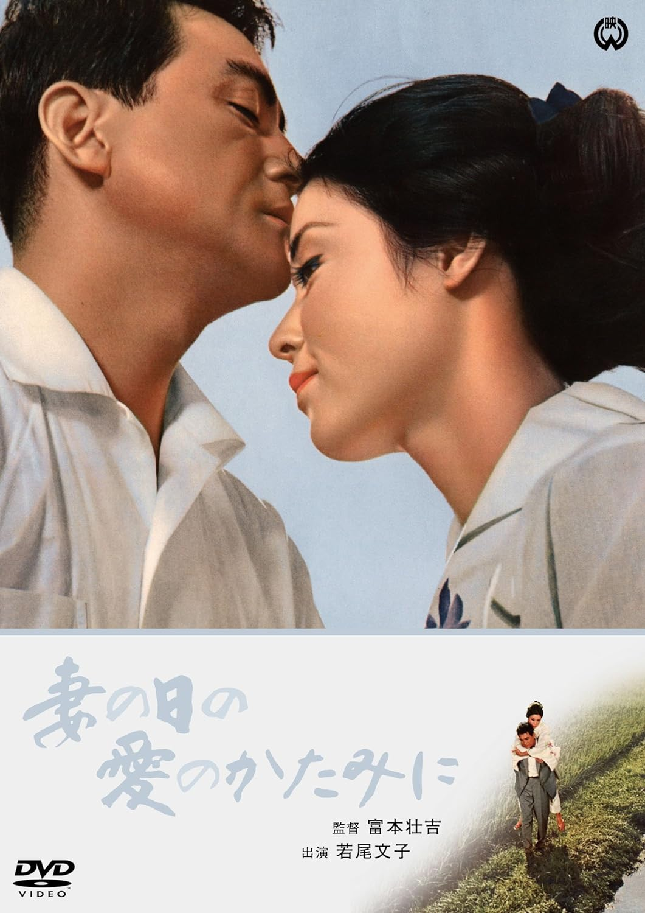

字幕仅供个人兴趣学习，不得商业化和付费。如有其他字幕翻译是基于我提供的字幕，敬请标明出处。
Note:
Subtitles are only for personal use, no commercialized purpose or distribution for money. If you want to share them, please include proper ciation(s) to my site. If you want to translate to other languages based on the subtitles I provide, please cite the source in your subtitle. Thanks.

比翼鸟 / 妻の日の愛のかたみに (Tsuma no Hi no Ai no Katamini / While Yet a Wife) 是1965年富本壮吉监督，池上三重子原作，木下惠介剧本，木下忠司音乐，若尾文子 / 船越英二 / 泷花久子 / 原泉 / 藤村志保 / 浜村纯主演的电影。本片基于池上三重子自传改编，中文译名由 @步亭先生 提供。中文字幕由coralsundy自费出资，moello听译制作，noela09审核润色。适用于01:29:10的版本。由于电影年代久远，音轨质量一般，听译难免错漏，敬请谅解。
注:(点击展开中文译名由来，有剧透，敬请谨慎阅读)
妻の日の愛のかたみに。这个标题如果用中文来解释，是非常难以理解的。因为直译 就是和妻子互相爱护的每天。而妻の日の愛のかたみに 后面的 かたみに 写作互に。按照辞书上的解释，这个写法是日本的古文，有互相，交互的意思。《枕草子》中有这么一句「かたみにゐかはりて、羽の上の霜払ふらむほどなど」，意思是鸳鸯借着互相交换位置的时节，拍打下对方羽毛上的寒霜。从这点上看多少近似本朝相濡以沫的意思。我暂时还没有看过完整剧情，但看网上的介绍，电影是一个悲剧内核，但大团圆的结局。本片的故事出自池上三重子的自传笔记，而池上本人是罹患萎缩性关节炎的女教师。三十岁时起发病，整整十年一直在医院和家里来回的跑。期间他创作的介绍夫妻间爱情的作品在日本全国引起很大影响。1964年也就是她四十岁时，她不忍丈夫和他一起受苦，强行让丈夫和她离婚，也就是这年他出版了自传笔记《妻の日の愛のかたみに》，也就在同年大映公司看中了文章中的催泪元素，投拍同名电影，并在1965年上映。据说池上前夫生怕导演把他拍成“陈世美”，参加电影首映式，并看到剧终。他对电影内容非常满意，而池上虽然没有参加首映式，但要求制片方给她一个人放了场早场电影，看到若尾文子演的自己，在电影结束后，她整整哭了一小时才停下。池上三重子虽然得了如此重病，但延至2007年才以83岁的高龄才逝世。我猜测，自四十岁离婚后，她就是用和前夫14年的美好婚姻生活支撑自己活下去的吧。。。 鉴于此，可以总结成为《比翼鸟 连理枝》。随后从高峰秀子的1961电影《同命鸟》取得灵感，直接取《比翼鸟》即可，即表现出了夫妻情深，又暗示了剧情变化结局，最后与日文原名遥相呼应。(感谢微博[步亭先生](https://weibo.com/u/7756344026)帮助提供中文译名，并解释以上背景提要)
No English Subtitle
听译/字幕: moello (moello1909@outlook.com)
审核/润色: noela09 (noela1990@outlook.com)
校对/调整: coralsundy (coralsundy@gmail.com)
(由coralsundy自费出资制作, 仅供个人学习)
中文字幕: Tsuma.no.Hi.no.Ai.no.Katamini.aka.While.Yet.a.Wife.1965.chs.01-29-10.BYmoello.rev1.srt
English Subtitle: None
SUBHD: https://subhd.tv/a/556909
IMDB: https://www.imdb.com/title/tt8988632/
DOUBAN: https://movie.douban.com/subject/34969214/
More Movie Subtitles on My Website: CLICK HERE
比翼鸟 / 妻の日の愛のかたみに / Tsuma no Hi no Ai no Katamini aka While Yet a Wife 1965 Subtitle (Chinese) is published on 2023-10-23.